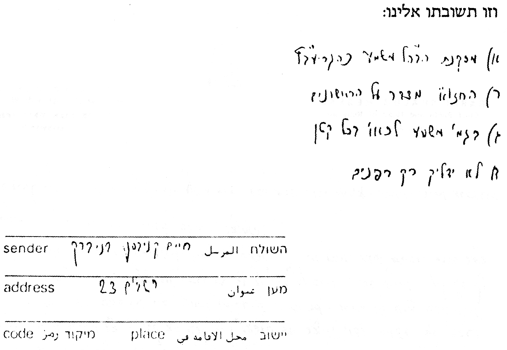

בענין שיעור כזית ובעוד ענינים
בס"ד י"ט אב תשנ"ב
לכבוד הגאון הגדול, רבי חיים קנייבסקי שליט"א.
א. בספר שונה הלכות (סי' רכ"ה סי' ד') כתב כת"ר שליט"א, שהרואה פרי המתחדש משנה לשנה, ואפילו פרי מורכב, מברך "שהחיינו". אך ראיתי בבה"ל (סי' רכ"ה ד"ה "פרי") שהביא מחלו' ד"ז, וכתב בשם הלק"ט שאין לברך ע"כ, דפרי זה נעשה נגד רצון הבורא ית"ש, ובשם הריעב"ץ כתב שיש לברך עליו, דכ"ש מברכת "בריות נאות" על ממזר. והמ"ב שם לא הכריע בזה. ולכאו' צ"ל סב"ל, ולא לברך ע"כ, וכן ראיתי שכבוד תורתו שליט"א כתב בהקדמה לשונה הלכות שלא בא להכריע ההלכה. וא"כ מדוע כתב בפשיטות להקל ולברך.
ב. במקום שהגאון החזו"א זצ"ל חלק על דברי המ"ב זצ"ל, כגון מש"כ בקונטרס השיעורים (או"ח סי' ל"ט סקי"ז), דליכא מאן דסבר כמ"ב שכזית הוי חצי ביצה עם קליפתה, כמי אזלינן להלכתא [אמנם באותו מקרה כתבו באנציקלופדיה התלמודית שכ"מ מהח"א (כלל נ' סוף סעי' י"ב), וכן מהבכור שור בסוטה (ד"ה, א') ועוד פוס'].
ג. מאיזה גיל יש לחנך ילד קטן שלא לנעול נעלי עור ביוה"כ. האם מגיל חינוך (7-6 שנים) או יותר מוקדם, מעת שמתחיל ללכת.
ד. מי שגר בדירה גבוהה יותר מכ' אמה, ובבנין שמולו ישנן עוד דירות באותו גובה. האם רשאי להדליק נר חנוכה באופן שנראה רק כלפי חוץ לאותן דירות, ולא לכלל הרבים. וכמו שמצינו גבי החוזר לביתו מאוחר, שדי שיעיר כמה מבני ביתו שיראו את ההדלקה. או דבעי פרסומי ניסא דוקא לרשות הרבים ממש, והיינו לרחוב. או שבכל מקרה עדיף להדליק הנרות רק כלפי פנים הדירה של המדליק.
אודה לכת"ר שליט"א אם יטרח להשיבני מהרה, כיון שהדברים אינם מיושבים אצלי דיים, ואין שמחה כהתרת הספקות.
בברכת התורה
משה הררי
פעיה"ק ירושלים תובב"א
וזו תשובתו אלינו:

א) מסקנת הבה"ל משמע כהגריעב"ץ
ב) החזו"א מדבר על הראשונים
ג) בגמ' משמע לכאו' בכל קטן
ד) לא ידליק רק בפנים